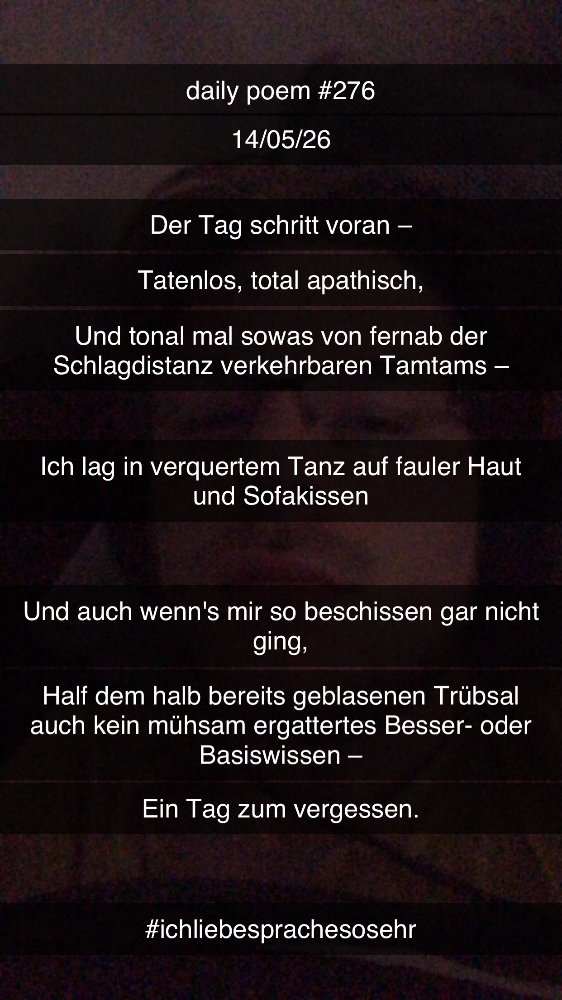

Der Tag schritt voran –
[276]Der Tag schritt voran –
tatenlos,
total apathisch,
und tonal mal sowas von fernab
der Schlagdistanz
verkehrbaren Tamtams –
ich lag in verquerem Tanz
auf fauler Haut
und Sofakissen,
und auch wenn's mir so beschissen
gar nicht ging,
half dem halb bereits geblasenen
Trübsal
auch kein mühsam ergattertes
Besser- oder Basiswissen –
ein Tag zum vergessen.
